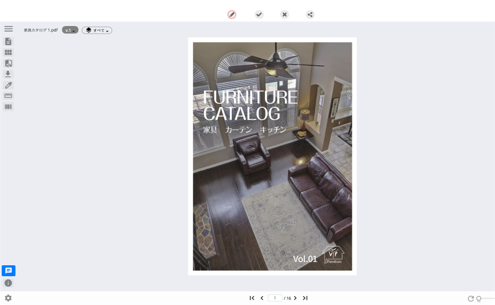
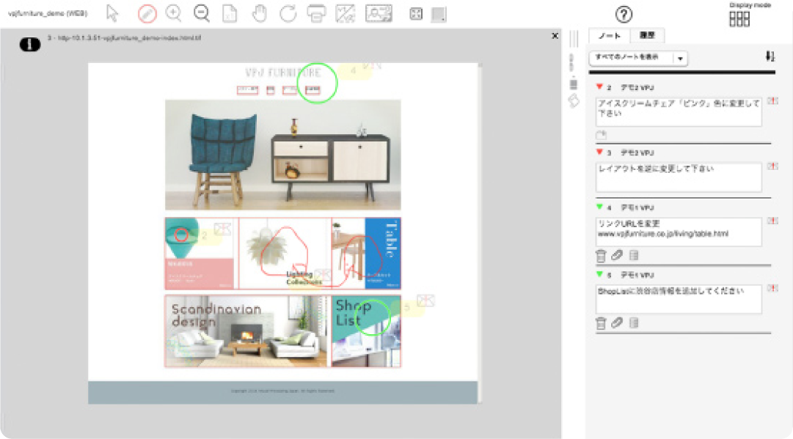
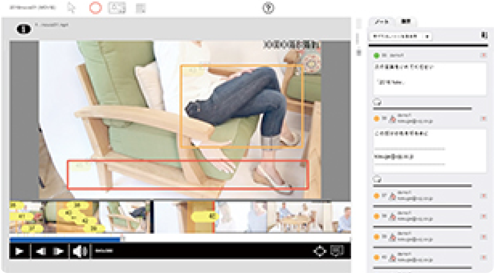
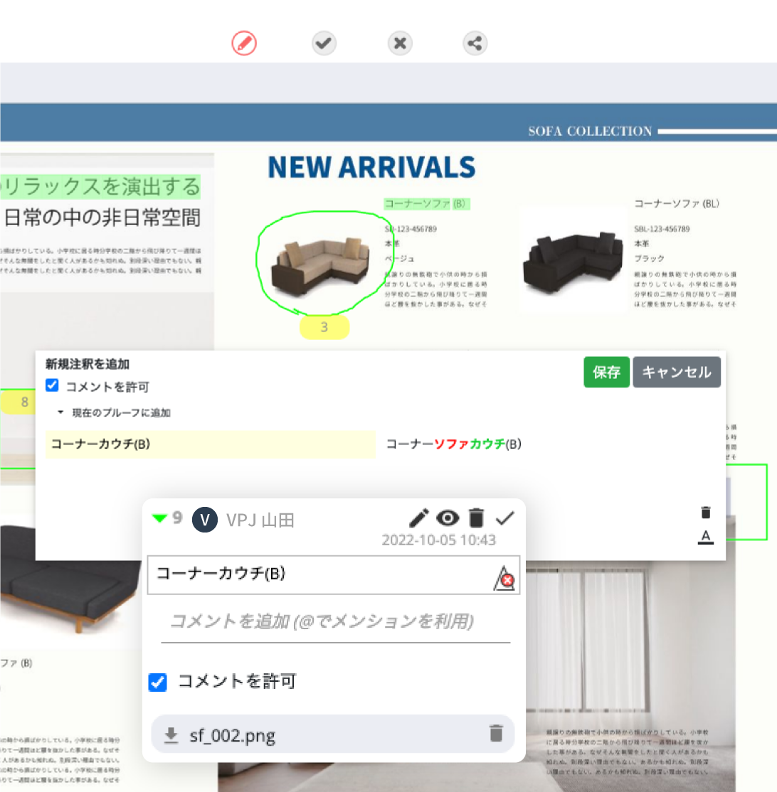

オンラインコミュニケーション機能
APROOVE WMでは、利用が簡単なオンライン校正機能から、複数回の校正確認、社内外多くのステークホルダーによる承認、法的なコンプライアンス確認を伴う回覧までのコミュニケーションをオンラインでサポートする機能を備えています。
-
PDF／ドキュメントオンライン校正
PDFや画像データはもちろん、Photoshop、Illustrator、Officeデータなど様々なフォーマットに対応しています。モリサワフォントなどの情報も引き継がれるため、印刷結果と同じ状態のプレビューで校正作業が行えます。
-

-

-
WEBサイト校正
WebサイトやHTMLメールをプレビューで表示、実際にWEBで閲覧する感覚で直感的にデザインや内容に対する注釈指示が行えます。
-
動画データオンライン校正
画面上で動画を再生しながら、映像や字幕内容に対する注釈指示を入れる事が可能です。
-

オンライン注釈指示

-
画像ファイル添付注釈
修正指示の入力と合わせて差し替える画像やExcelファイルなどのデータを添付する事が可能です。
-
テキスト抽出による注釈指示
制作データやWEBサイト上のテキストをそのまま抽出して、修正指示を行う事が可能です。※画像に埋め込まれた文字などデータ上にないテキストは抽出不可です。
-
注釈タグフィルタリング
注釈指示に対して、タグ(属性情報)を付与する事が可能です。
-
注釈一覧表示
ページごとのすべての注釈を一覧で確認することが可能です。
-
注釈タグフィルタリング
タグ(属性情報)ごとにフィルタリング表示することが可能です。
オンラインコミュニケーション
-
チャットコミュニケーション
注釈に対してチャット形式でコミュニケーションを図る事が可能です。
-
バージョン管理
初校から校了までの全データのバージョンを管理できます。
-
差分比較／ハイライト表示
前回バージョンと修正済みバージョンを比較すると、修正された箇所の差分がハイライトされた状態で表示されます。
-
台割進行表示
複数のページやファイルが登録されているプロジェクトの、各ページごとのステータスが色別に表示されるため、全体の進捗を視覚的に確認できます。
-
全文検索
データ上のテキストを検索で探し出し、注釈指示する事が可能です。
-
注釈内容PDF生成
注釈内容が記載された状態のレイアウトと注釈指示一覧を生成可能です。
-
操作履歴／注釈履歴表示
操作履歴や注釈履歴をユーザー名と合わせて表示できる為、誰が・いつ・どのような操作を行ったのか確認できます。
-
パッケージ校正ツール
サイズ計測、回転機能、色濃度計、バーコードリーダーなどパッケージ校正向けツールを搭載しています。
-
ページ承認・否認
ページごとに承認、否認を行うことが可能です。
ゲストコミュニケーション
-
ゲスト招待機能（注釈・承認）
クライアントなどゲストユーザーへ制作データの校正や承認依頼のメールを通知できます。
-
ゲスト招待機能（ログイン2FA・二要素認証）
招待メール内のURLをクリックするとログイン用のパスワードが再度メールで通知される2要素認証を設定する事が可能です。
-
ゲスト招待機能（アップロード）
特定期間内に校正用のデータをアップロードしてもらう事が可能です。
-
ゲスト招待機能（チャット）
ゲストユーザーが登録した注釈内容に対してユーザが返答するとゲスト宛に返答内容をメールで通知できます。
-
ゲスト招待機能（表示範囲指定）
データの一部分のみの校正 / 承認を依頼する場合には、該当箇所をドラッグして選択し、ロックをかけた状態で校正プロジェクトに招待する事が可能です
-
ゲスト招待機能（アドレス帳登録）
アドレス帳機能を搭載しているため、ゲストへの作業依頼をする際に名前やメールアドレス、グループなどを検索しメール送信する事が可能です。